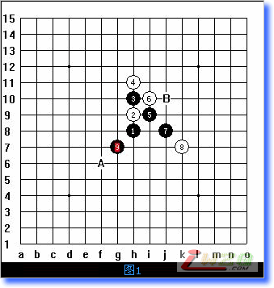
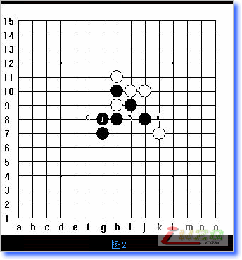
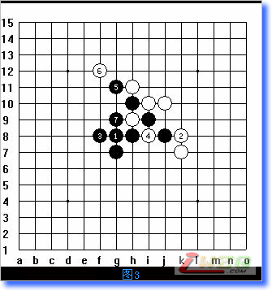
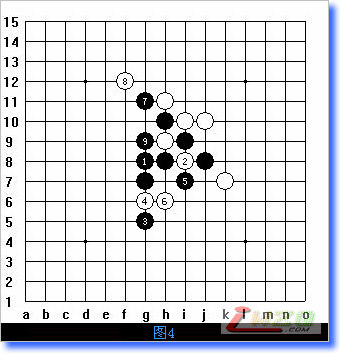
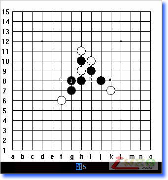
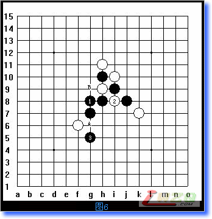
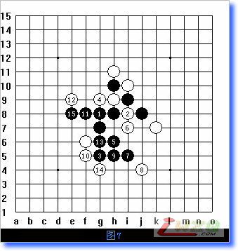
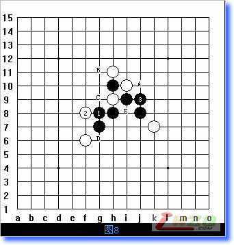
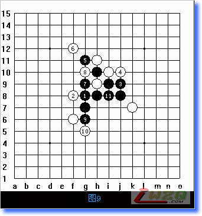

棋型分析——“T”型（必赢）
#1 棋型分析——“T”型（必赢） 作者：有志青年 发表时间：2007-8-5 13:15:42

以前我曾介绍过一些棋型的优劣，谈到：“在对局的时候，通常当某一个棋型出现后，如果你对它很熟悉，那么看到这个棋型的时候就基本上就可以判定胜负了。”比如图1中的这个“T”型，就是一个必胜的棋型。
最近在为大家做寒星局的定式详解，所以比较关注寒星的定式，在中国五子棋网的寒星互动定式库中看到的这个棋型，但走到这里以后就结束了，只是特别的注明了一点，这是必胜的棋型。
我想可能很多初学五子棋的朋友，在看到这里的时候，会搞不明白为什么要说它是必赢的？这就是职业棋手和业余棋手的差异之一。
以前我谈到过职业棋手的很多文章和站点对初学者来说没有什么价值，也是说的这个问题。通常情况下职业棋手在对局中只要出现了某种棋型，基本就可以判定胜负了，但业余棋手不具备职业棋手的计算能力，也缺乏职业棋手的专业度。所以自然就看不明白。
比如图一中，当这个“T”型一出来，执白的一方就会弃子认输了。因为他们知道这个棋型是黑必胜的棋型。再走下去无非是抱侥幸心理——“期望对方出现失误”和“未必可能知道后势的变化”。要知道，对于一个职业棋手来说，这种失误的可能实际上是几乎等于零。
但对于一个业余棋手来说，特别是初学者，常常会提出这样的问题：“没有输呀？哪输了？”因为他们不了解这个棋型后边的变化，所以自然就提出了这样看似幼稚的问题。
还是那句话：“我愿成为你们的垫脚石，成为沟通初学者和职业棋手的桥梁。”为什么这个是必胜的，我来解释给大家听：
图1中，黑9手后，白有A、B两个应点。
假如白应A点，则黑有变化如下：
图1中白应A点后，黑依然走G8不变，如下图：

黑1落G8点后白2有A、B、C三点可应。
若白2应A点则黑有以下变化：

白2应A点K8，则黑有F8、G11、G9的VCF胜定，如图3。
白2应B点I8（图2），则黑有如下变化：

白2落I8后，黑3向跳活三，白4中间断G6，黑5斜跳斜活三（所以不走H6是因为I7点可以和G9点形成43点的后续呼应），白6中间再断，黑7连冲4，白8断，黑9后成43杀，胜定。
倘若白4应G9或G4黑如何变化？作为习题好了，有不清楚的朋友提出问题，我再解释。
图2中白应C点，后势无改动，黑走法同白2应中间B点。
推断到这里，我们就把图2中白应A、B、C三点的全部变化都推断完了。这时候黑依然是胜，我们就可以得到出一个结论，在图1中白应B点后，黑就是必胜。
为此我们已经将图2中所有白应点变化的后势都推断完了，这种推断方法就叫“穷尽”。
现在我们再来推断图1中白应A点后黑的变化：

白应F6（图1中A点）：
黑依然走G8不变，黑1后，白同样派生出3个应点A、B、C，白2若应A点，黑胜法同图3，白2应B点，则黑有如下胜法（图6）：

图6后白再次派生出3个应点，A、B、G4，G4点无意义去掉，保留A、B两点，则当白应图6中A点时，黑变化同图4，不同的只是在6线上形成一个活三。但黑是VCF不用理会。
图6中若白4应B点：

则黑有变化之一如图7：
黑5跳斜活三，白6中间断，黑7下冲再活三，白8底下托断，黑9继续活三，白10挡，黑11、13连冲4后黑15成四三，胜定。
倘若图5中白应C点：则黑3有下图8的一子双杀：

A点为直接的43点，若被白断，则黑有B、C、D、E的手顺在E点形成另一个43杀，如下图9：

备注：这里给出了“T型”的部分点的穷尽解法，比如在图5中，黑1不是唯一的必杀点，若走在I7同样可以穷尽出必胜。各位朋友自己推断。
当某一个白的应点被我们穷尽后，始终有必然的胜，那么我们就可以说这个白的应点就是必输；
当某一个黑的落点，白无论如何应都无法阻止黑的最终胜利，那么我们就可以说，这个黑的落点就是必胜的点；
当我们从后往前（比如先证明第6手再证明第4手）一直推断到白的第4手，始终无法对黑的第三手落点形成有效的防守，那么我们就可以说这个黑的第三手就是必胜的点。
如同这个T型一样，当我们穷尽了中间的所有应点后，我们就可以说，也有理由相信这个就是必胜的棋型。职业网站上说的必胜，也是通过这种穷尽的方式证明出来的。
#2 Re:棋型分析——“T”型（必赢） 作者：百医天使 发表时间：2008-2-18 18:26:12
是不是只能说这种情况下的“T”形必胜，还是所有的“T”形必胜呢？这个棋对白的点有了限制了呀，
#3 Re:棋型分析——“T”型（必赢） 作者：糖醋小排 发表时间：2008-4-23 18:26:17
“T”形必胜，
#4 Re:棋型分析——“T”型（必赢） 作者：敢脱天下先 发表时间：2008-4-25 9:16:52
我总是感觉一旦出现这种定论，五子棋就会失去一些的乐趣。。
#5 Re:棋型分析——“T”型（必赢） 作者：终结者五子棋 发表时间：2008-4-27 19:10:55
好，我就喜欢这种分析棋法#6 Re:棋型分析——“T”型（必赢） 作者：汪洋孤舟 发表时间：2008-4-29 11:32:57
太好了，越看越觉得精彩！我分析了好多遍了！#7 Re:棋型分析——“T”型（必赢） 作者：黎明 发表时间：2008-5-5 14:55:31
刚开始学习，有很多东西不好记住！#8 Re:棋型分析——“T”型（必赢） 作者：顾海 发表时间：2008-5-9 12:56:17
记不了那么多，能赢就行啦。。。。。。
#9 Re:Re:棋型分析——“T”型（必赢） 作者：旅行者 发表时间：2008-5-18 19:03:03
引用：是啊，关键是我都赢不了
原文由 顾海 发表于 2008-5-9 12:56:17 :
#10 Re:棋型分析——“T”型（必赢） 作者：我把自己丢拉 发表时间：2008-7-5 10:31:33
 好好研习
好好研习
#11 Re:棋型分析——“T”型（必赢） 作者：孤心 发表时间：2008-7-12 7:29:19
很好,又学了一招
#12 Re:棋型分析——“T”型（必赢） 作者：乐乐乐 发表时间：2008-7-13 14:14:14
很棒,很受启发啊!
#13 Re:棋型分析——“T”型（必赢） 作者：超级菜鸟徒弟 发表时间：2009-3-6 9:36:42
好好理一下思路，再仔细看一下 。
。